Excel là một phần mềm lập bảng tính nằm trong bộ Office của hãng Microsoft. Chương này giới thiệu về Mircosoft Excel 2019, tập trung giới thiệu tới người học một số vấn đề như:
- Tổng quan về Microsoft Excel 2019
- Cách thức quản lý Worksheet
- Các thao tác cơ bản trên các ô tính (cell)
- Định dạng bảng tính
- Các công thức Excel cơ bản
- Một số tính năng mở rộng của Excel.
Nội dung của chương
Chương này tập trung một số nội dung chính sau:
- Tổng quan về giao diện Excel
- Xử lý dữ liệu trong bảng tính
- Một số hàm thông dụng trong bảng tính
- Xử lý cơ sở dữ liệu
- Định dạng và in ấn bảng tính
Một số tính mới trong phiên bản Microsoft Excel 2019
Phiên bản Office 2019 với nhiều cải tiến. Tính năng và giao diện tương thích tốt với hầu hết các nền tảng, trong đó có windows 10, nâng cao khả năng tương tác và làm việc nhóm, đơn giản hóa việc chia sẻ file và tài liệu. Sử dụng Office 2019 nói chung và Excel 2019 nói riêng, giúp thay đổi hoàn toàn phong cách làm việc, đáp ứng nhu cầu đa dạng cũng như mang đến những giá trị tốt nhất.
Một số tính năng mới của Office 2019:
- Tích hợp tính năng Lync và Skype dành cho các doanh nghiệp.
- Công cụ soạn thảo, tạo bảng tính, trình chiếu, ... hỗ trợ tốt hơn trên Windows 10.
- Giao diện với thanh công cụ Ribbon.
- Hỗ trợ tối đa cho các thao tác trên màn hình cảm ứng.
- Cho phép nhập câu lệnh để mở và chia sẻ file.
Giao diện
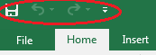
Giao diện làm việc của Excel 2019 có một vài sự thay đổi nhỏ so với phiên bản Excel 2013. Điểm đầu tiên nhận thấy đó là biểu tượng của các công cụ Excel được bỏ đi. Thông thường, ở Office 2013 trở về trước biểu tượng này thường xuất hiện ở góc trên bên trái của file. Như vậy, trên góc này chỉ còn 3 tính năng là: save, undo và redo.
Góc phải giao diện được bổ sung tính năng Share. Với tính năng này, người dùng dễ dàng chia sẻ với tất cả mọi người. Một điểm nữa đó là biểu tượng Editing không còn là một chiếc ống nhòm như trước đây mà thay vào đó là một chiếc kính lúp.
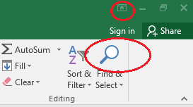
Tính năng Tell me
Tell
me là tính năng mới tiếp theo của Office 2019. Tell me có mặt trong tất cả các công cụ Word, Excel, PowerPoint .. của Office
2019. Tell me giải đáp mọi yêu cầu từ người dùng, thông qua các từ khóa người dùng
nhập vào, Tell me sẽ đề xuất các menu chính và
menu con tương ứng có liên quan. Phím tắt để sử dụng tính năng
Tell me đó là Alt+Q.
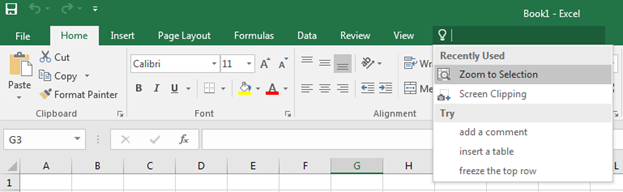
Các công cụ
Word, Excel, PowerPoint được Office
2019 tích hợp tính năng chia sẻ tài
liệu trực tuyến. Khi thực hiện tính năng này, người dùng có thể chia sẻ tài
liệu Office trên công cụ mà mình đang sử dụng với
bạn bè hoặc đồng nghiệp của mình.
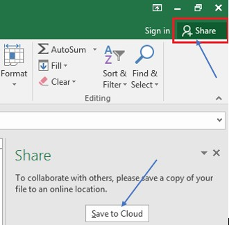
- Chọn Share à click Save to Cloud để lưu tài liệu lên One Drive bằng Account Microsoft của người dùng (Phải đảm bảo người dùng đã đăng ký tài khoản Microsoft, nếu chưa có, phải thực hiện bước đăng ký trước).
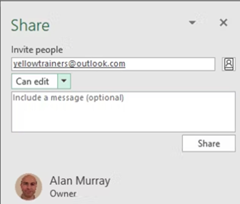
Ø- Nhập thông tin đối tượng cần chia sẻ tài liệu tại Invite people. Có thể thay đổi quyền chỉnh sửa tài liệu hoặc thêm nội dung tin nhắn nếu muốn.
- Ấn Share.
- Người được chia sẻ vào Email mở file để xem hoặc chỉnh sửa văn bản tùy ý.
Một đặc điểm hữu ích là người được chia sẻ file, không cần có tài khoản Microsoft mà vẫn có thể xem và chỉnh sửa được nhờ tính năng Office Online trên One Drive. Tên hiển thị của người dùng sẽ là Khách (Guest). Khi có người chỉnh sửa hoặc xem bài, thông tin người đó sẽ hiển thị trên cửa sổ Share công cụ của Excel. Bạn có quyền thay đổi quyền cho các tài khoản đó như thay đổi quyền chỉnh sửa, quyền xem nội dung ...hoặc dừng chia sẻ bất kỳ lúc nào.
Tính năng Smart Lookup
Đây là tính năng khá bổ ích của Office 2019. Khi lựa chọn tính năng này, người dùng sẽ có trong tay một công cụ tìm kiếm ý nghĩa của từ bằng công cụ như Bing.
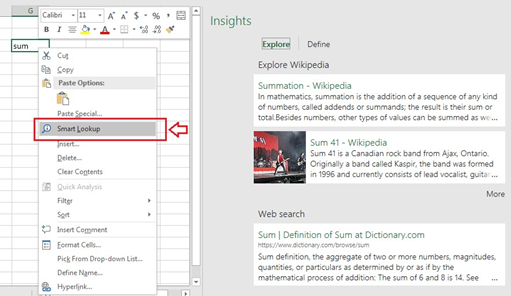
Với tính năng Smart Lookup, người dùng có thể tìm kiếm bất cứ thông tin về các từ, cụm từ hay thậm chí cả một đoạn văn trên công cụ tìm kiếm Bing thay vì phải sử dụng các trình duyệt web như Chrome, CocCoc hay Firefox để tìm kiếm. Có thể thấy Office 2019 đang tối ưu hóa rất nhiều tính năng hữu ích dành cho người dùng.
Các hàm mới
Excel 2019 bổ sung thêm nhiều hàm hữu ích giúp tính toán dễ dàng hơn:
• TEXTJOIN: Kết hợp các văn bản từ nhiều ô lại với nhau bằng một dấu phân cách (ví dụ: dấu phẩy) mà không cần sử dụng công thức phức tạp.
• CONCAT: Giống như hàm CONCATENATE nhưng linh hoạt hơn, hỗ trợ kết hợp nhiều phạm vi ô.
• IFS: Hàm điều kiện nhiều lớp giúp thay thế các hàm lồng nhau IF.
• SWITCH: Dễ dàng so sánh một giá trị với nhiều điều kiện và trả về kết quả phù hợp.
• MAXIFS/MINIFS: Tính giá trị lớn nhất hoặc nhỏ nhất trong một phạm vi thỏa mãn điều kiện.
Biểu đồ mới
- Map Charts: Biểu đồ bản đồ giúp trực quan hóa dữ liệu theo khu vực địa lý như quốc gia, bang, thành phố.
- Funnel Charts: Biểu đồ hình phễu giúp theo dõi tiến độ hoặc phân tích quá trình giảm dần dữ liệu.
Tính năng PowerPivot và PowerQuery
- PowerPivot: Giúp tạo mô hình dữ liệu phức tạp, liên kết dữ liệu từ nhiều bảng và thực hiện các phép tính nâng cao với dữ liệu lớn.
- PowerQuery: Cải tiến công cụ nhập dữ liệu, dễ dàng trích xuất, biến đổi và tải dữ liệu từ các nguồn khác nhau (như cơ sở dữ liệu, trang web).
Cải tiến biểu đồ PivotTable
- PivotTable Enhancements: Các cải tiến về giao diện và chức năng cho bảng PivotTable, bao gồm cả khả năng tự động nhận biết và làm mới dữ liệu khi có sự thay đổi.
- Personalized PivotTable Layouts: Tùy chỉnh bố cục bảng PivotTable theo nhu cầu của người dùng và lưu lại bố cục yêu thích để sử dụng lại.
Inking Features
Excel 2019 cho phép người dùng tương tác trực tiếp với các thiết bị cảm ứng bằng cách viết hoặc vẽ lên bảng tính bằng bút kỹ thuật số. Người dùng có thể vẽ các hình dạng tự do, tô màu và sử dụng bút điện tử để làm nổi bật thông tin.
Các tính năng khác
- New Excel Templates: Bổ sung nhiều mẫu biểu bảng và báo cáo mới, giúp người dùng dễ dàng tạo ra tài liệu chuyên nghiệp hơn.
- Enhanced Collaboration: Cải tiến khả năng làm việc nhóm và chia sẻ trực tuyến, nhiều người dùng có thể làm việc đồng thời trên một bảng tính.
Những tính năng này giúp cải thiện đáng kể khả năng phân tích và trực quan hóa dữ liệu, cũng như tăng hiệu suất làm việc trên Excel.
Để làm việc với Excel 2019, về cơ bản các thao tác làm việc với file excel khá tương đồng với các ứng dụng khác trong bộ Office của Microsoft (Xem thêm Chương 1 - Cách khởi động và thoát khỏi Microsoft Word). Người dùng có thể kích hoạt chương trình Microsoft Excel 2019 thông qua biểu tượng chương trình. Lựa chọn một template đã được định dạng sẵn hoặc chọn Blank workbook để mở ra một giao diện mới chưa định dạng.
Để thoát khỏi môi trường làm việc của Excel, Chọn Ribbon File -> Close, hoặc chọn biểu tượng đóng cửa sổ ở góc trên bên phải màn hình giao diện Excel.
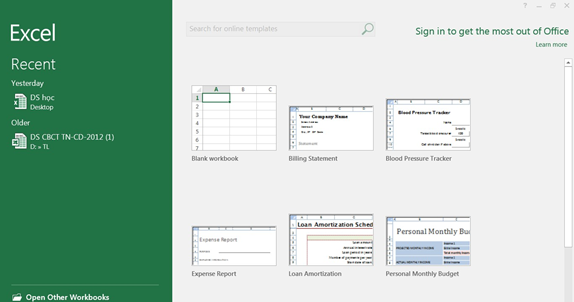
Hình 6.1. Màn hình khởi động Excel
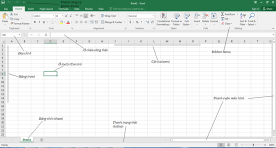
Hình 6.2 Giao diện cửa sổ Microsoft Excel
Ribbon menu: Ribbon là một thay đổi lớn trong các phiên bản từ Excel 2003 đến nay. Ribbon chứa tất cả các lệnh liên quan đến quản lý và làm việc với bảng tính (Spreadsheets). Ribbon được thiết kế để giúp người dùng nhanh chóng tìm kiếm các lệnh cần để thực hiện một nhiệm vụ nào đó. Các lệnh được tổ chức theo các nhóm logic, được tập hợp lại dưới các Tab. Mỗi Tab liên quan đến một loại hoạt động, chẳng hạn như định dạng hoặc hiển thị một trang. Để giảm sự lộn xộn, một số Tab chỉ được hiển thị khi cần.
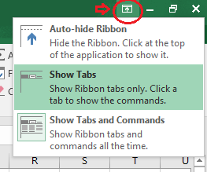
Ví dụ: tab Picture Tool chỉ được hiển thị khi hình ảnh được chọn. Ngoài ra có thể có thể tùy chỉnh chế độ hiển thị của Ribbon, các lệnh và các Tab.
Tab Home: là tab được người dùng sử dụng nhiều nhất. Tab bao gồm các lệnh đặc trưng về định dạng ô (cell) và định dạng kí tự (text), ví dụ như thay đổi phông chữ cho đoạn văn bản, …Tab Home cũng bao gồm những định dạng bảng tính cơ bản, như: wrap text, merging cell, và style cell.
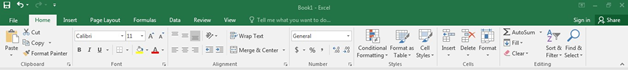
Tab Insert: Cung cấp khá đa dạng các mục mà người dùng có thể chèn vào trong một workbook, như: pictures, clip art, header and footer, đặc biệt là thao tác chèn các biểu đồ vào trong bảng tính …
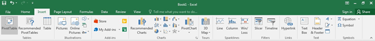
Tab Page Layout: Tab bao gồm các lệnh dùng để căn chỉnh trang như: chỉnh lề (margin), hướng in (orientation),…
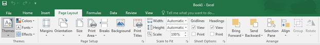
Tab Formulas: Tab có các lệnh sử dụng khi tạo Công thức. Tab này chứa một thư viện hàm lớn có thể hỗ trợ khi tạo bất kỳ công thức hoặc hàm nào trong bảng tính.
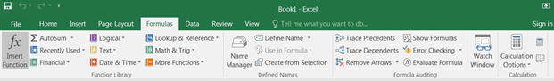
Tab Data: Tab cho phép người dùng chỉnh sửa một lượng lớn dữ liệu trong bảng tính, bằng cách sắp xếp, lọc dữ liệu, cũng như nhóm và phân tích dữ liệu.
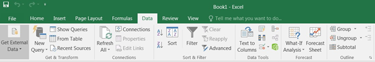
Tab Review: Tab cho phép người dùng sửa chính tả, ngữ pháp cũng như thiết lập các chế độ bảo mật. Đồng thời cung cấp khả năng ghi chú (note) lại các đặc trưng và theo dõi những thay đổi trong bảng tính của người dùng.
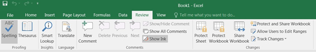
Tab View: Cho phép người dùng thay đổi chế độ xem cửa sổ làm việc, như: freezing hoặc splitting panes, viewing gridlines và hide cells.
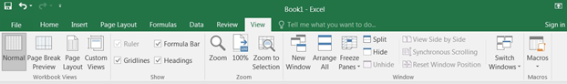
1.3 Thao tác với bảng tính
1.3.1 Cấu trúc của một Workbook
Workbook
Một tập tin của Excel 2019 được gọi là một Workbook và có phần định dạng file mặc định là .xlsx. Một Workbook được xem như một tài liệu gồm nhiều trang gọi là sheet, một workbook có tối đa 255 sheet.
Worksheet
Mỗi sheet là một bảng tính gồm các hàng và cột.
- Hàng: được đánh số thứ tự từ 1,2,3, …
- Cột: được đánh số từ A, B, C, …
- Ô: Là giao của cột và hàng, dữ liệu được chứa trong các ô, giữa các ô có lưới phân cách.
- Mỗi ô có một địa chỉ được xác định bằng tên của cột và số thứ tự hàng
- Con trỏ ô: là một khung nét đôi, ô chứa con trỏ ô được gọi là ô hiện hành.
- Vùng: gồm nhiều ô liên tiếp nhau, mỗi vùng có một địa chỉ được gọi là địa chỉ vùng.
Địa chỉ vùng được xác định bởi địa chỉ
của ô góc trên bên trái và ô góc dưới
bên phải. Giữa địa chỉ của
2 ô
là dấu hai chấm (
Ví dụ: Địa chỉ vùng A1:B3
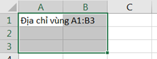
Gridline: Trong bảng tính có các lưới (Gridline) dùng để phân cách giữa các ô, các ô lưới này sẽ không xuất hiện khi in ấn. Muốn bật/ tắt Gridline, chọn lệnh View -> (Group Show) -> Gridlines.
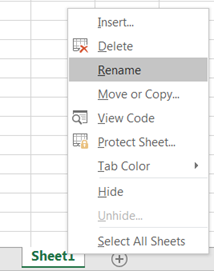
- Chọn Sheet làm việc: Click vào tên Sheet.
- Đổi tên Sheet: Double_Click ngay tên Sheet cần đổi tên, sau đó nhập tên mới cần đổi. Hoặc, chọn Sheet cần đổi tên -> Right Click -> chọn Rename -> Đặt lại tên cho Sheet mới.
- Chèn thêm Sheet: Chọn lệnh Insert -> WorkSheet. Hoặc, chọn biểu tượng dấu cộng (+) để thêm Sheet mới.
- Xóa Sheet: Chọn Sheet cần xóa, Right_Click -> Delete.